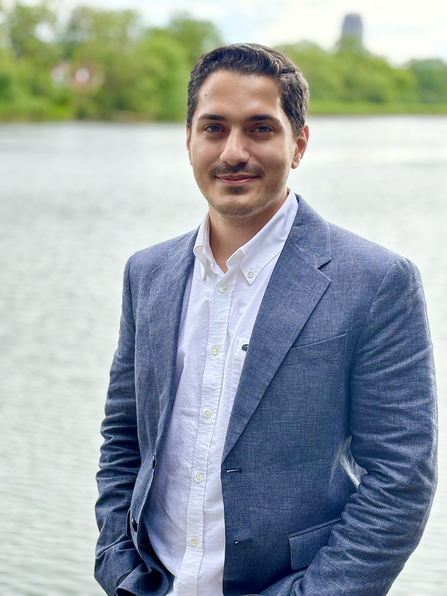

PhD Candidate
Ehsan Manafi
IOC-UPC | CITCEA-UPC, Universitat Politècnica de Catalunya · BarcelonaTech, Spain[cite: 1]
Doctoral researcher specializing in energy-aware production scheduling, demand response, sustainable operations, and the integration of Battery Energy Storage Systems (BESS) into industrial decision-making[cite: 1].
My research leverages operations research models (MILP, Constraint Programming)[cite: 1, 2] and reinforcement learning[cite: 1, 2] to optimize flexible manufacturing and complex energy systems[cite: 1].
Research Experience
Research Engineer | CITCEA-UPC (PULSE Project)[cite: 1]
May 2026 – Present[cite: 1]
Barcelona, Spain[cite: 1]
- Analyze national and EU-level grid interconnection standards (EN 50549, IEEE 1547, G99) to support wireless V2G converter compliance[cite: 1].
- Collaborate with European partners (CENEX-UK, EATON, HEDNO, PPC, VTT) to align regulatory interpretations across pilot sites[cite: 1].
- Contribute to HIL/PHIL (Hardware-in-the-Loop) compliance testing design for modular firmware validation[cite: 1].
Visiting PhD Researcher | Technical University of Darmstadt[cite: 1]
Dec 2025 – Feb 2026[cite: 1]
Darmstadt, Germany[cite: 1]
- Conducted advanced mathematical modeling of production planning with Prof. Dr. Christoph H. Glock, incorporating BESS and battery degradation[cite: 1].
Research Assistant | Horizon Europe FLEX4FACT Project (UPC)[cite: 1]
May 2023 – May 2026[cite: 1]
Barcelona, Spain[cite: 1]
- Developed production scheduling and flexible manufacturing models using MILP and CP in CPLEX and OR-Tools[cite: 1].
- Simulated real-time data pipelines for industrial Digital Twin environments to enable energy-aware scheduling[cite: 1].
- Formulated multi-objective MILP models balancing operational costs with CO₂ emission reduction targets[cite: 1].
Education
Ph.D. Candidate in Supply Chain and Operations Management[cite: 1]
2022 – April 2027[cite: 1]
Universitat Politècnica de Catalunya (UPC), Barcelona, Spain[cite: 1]
Focused on energy-aware production scheduling, demand response, and Battery Energy Storage Systems (BESS) integration[cite: 1].
M.Sc. in Industrial Engineering[cite: 1]
2019 – 2021[cite: 1]
Tehran University, Tehran, Iran (GPA: 3.6/4.0)[cite: 1]
Specialized in Operations Research, advanced scheduling algorithms, and metaheuristics[cite: 1].
B.Sc. in Industrial Engineering[cite: 1]
2015 – 2019[cite: 1]
Kharazmi University, Tehran, Iran (GPA: 3.9/4.0)[cite: 1]
Publications & Manuscripts
International Peer-Reviewed Journals
-
A self-learning whale optimization algorithm based on reinforcement learning for a dual-resource flexible job shop scheduling problem.Applied Soft Computing, 180, 113436[cite: 2].
-
An energy-aware scheduling problem in a job shop floor/molding production system under sequence-dependent setups[cite: 2].The International Journal of Advanced Manufacturing Technology[cite: 2].
-
A comprehensive overview of industrial demand response status in Europe[cite: 2].Renewable and Sustainable Energy Reviews, 203, 114797[cite: 2].
-
A centroid opposition-based coral reefs algorithm for solving an integrated scheduling and conflict-free routing problem[cite: 2].Applied Soft Computing, Vol. 130[cite: 2].
Working Manuscripts & Under Review[cite: 2]
-
Data-Driven Energy-Aware Scheduling Optimization for a Single Speed-Scaling Machine: A Manufacturing Industry Case[cite: 2].Working Paper[cite: 2]
-
Energy- and Environment-Aware Job Shop Scheduling with Battery Degradation and Tradable Carbon Tax[cite: 2].Manuscript in Preparation[cite: 2]
-
Integrated Production-Energy Scheduling of a Flexible Manufacturing System with Embedded Employee EV Energy Storage for Demand Response Participation[cite: 2].Manuscript in Preparation[cite: 2]
Teaching & Academic Service
Teaching Assistant / Lab Instructor | UPC[cite: 2]
Fall Semester 2024[cite: 2]
Conducted English lab sessions for Erasmus Master's students in Industrial Scheduling under Dr. Bruno Domenech[cite: 2]. Covered forecasting, inventory management, TSP, VRP, and production scheduling heuristics (Helgeson-Birnie, Boctor, Bedworth-Bailey)[cite: 2].
EURO 2024 Speaker | 33rd European Conference on Operational Research[cite: 2]
July 2024[cite: 2]
Presented research on energy-aware production scheduling and flexible manufacturing in Copenhagen, Denmark[cite: 2].
Local Organizing Assistant | LOGMS 2026 Conference[cite: 2]
July 2026[cite: 2]
Assisted event logistics and attendee operations for the 14th International Conference on Logistics and Maritime Systems in Barcelona[cite: 2].
Skills & Certifications
Programming Languages
Python (PyTorch, TensorFlow, Stable-Baselines3, NumPy, Pandas)[cite: 3]
MATLAB[cite: 3]
HTML[cite: 3]
CSS[cite: 3]
Optimization & Solvers[cite: 3]
CPLEX[cite: 3]
OR-Tools[cite: 3]
MILP & CP[cite: 1]
Data Analytics & Tools[cite: 3]
SQL / T-SQL[cite: 3]
Tableau[cite: 3]
Power BI[cite: 3]
Git[cite: 3]
LaTeX[cite: 3]
Certifications[cite: 3]
Reinforcement Learning (Univ. of Alberta)[cite: 3]
Deep Learning (DeepLearning.AI)[cite: 3]
Django Specialization (Univ. of Michigan)[cite: 3]
Academic References
Prof. Dr. Bruno Domenech[cite: 3]
PhD Supervisor & Director of IOC, Universitat Politècnica de Catalunya (UPC)[cite: 3]
bruno.domenech@upc.edu[cite: 3]
PhD Supervisor & Director of IOC, Universitat Politècnica de Catalunya (UPC)[cite: 3]
bruno.domenech@upc.edu[cite: 3]
Prof. Dr. Matteo Ranaboldo[cite: 3]
PhD Co-Advisor & Lecturer at CITCEA, Universitat Politècnica de Catalunya (UPC)[cite: 3]
matteo.ranaboldo@upc.edu[cite: 3]
PhD Co-Advisor & Lecturer at CITCEA, Universitat Politècnica de Catalunya (UPC)[cite: 3]
matteo.ranaboldo@upc.edu[cite: 3]